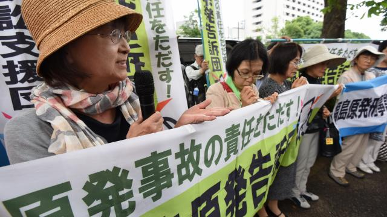

Rechtbank stelt overheid Japan weer aansprakelijk voor schade Fukushima.

Een Japanse rechtbank in Fukushima heeft dinsdag besloten dat de staat en het elektriciteitsbedrijf Tokyo Electric Power (Tepco) aansprakelijk zijn voor een schadebedrag van zo'n 500 miljoen yen, omgerekend zo'n 3,7 miljoen euro, na het kernincident in 2011.
Ongeveer 3.800 eisers hadden een zaak aangespannen tegen Tepco en de overheid na de tsunami en daarop volgende kernramp in Fukushima. Het gaat om de grootste groepsvordering in de geschiedenis van het land.
De uitspraak van de rechtbank is al de derde die in het nadeel is van het energiebedrijf. Eerder besloten de rechtbanken van Maebashi en Chiba al dat Tepco en de Japanse overheid moest betalen.
Tepco kreeg voor de ramp al kritiek dat het de gevaren van natuurlijke rampen in het gebied negeerde. Na de ramp was er veel onvrede over de manier waarop Tepco en de Japanse staat omgingen met de situatie.